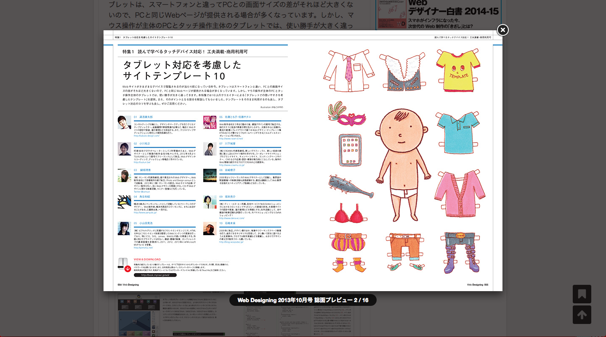
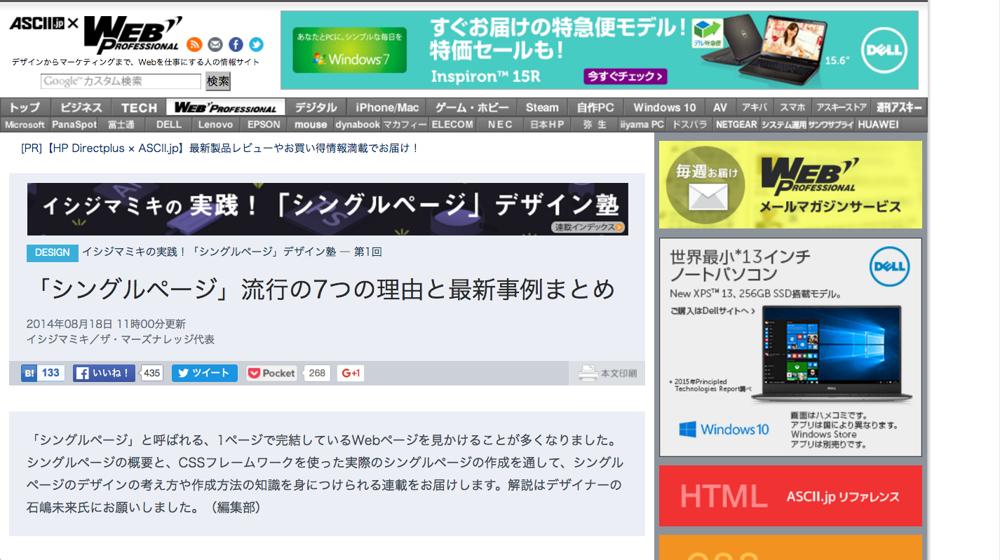
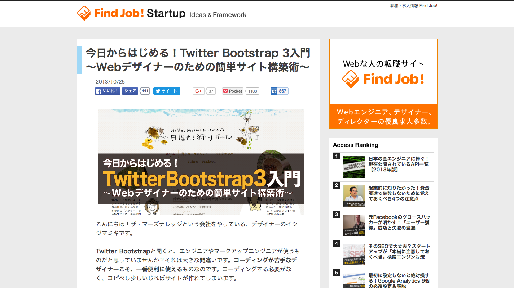

Contribution
Web Designing

Web Designing: 2013年10月号
Web Proffesional

ASCII.jp：失敗写真を諦めない！歪みを60秒で直すPhotoshopテク
ASCII.jp：動画：Photoshopで共通パーツを効率よく作る方法
ASCII.jp：23秒で冬景色が夏景色に！驚きのPhotoshopテク！
ASCII.jp：ジャマな背景を19秒で消す、驚愕のPhotoshopテク！
ASCII.jp：動画：Photoshopで共通パーツを効率よく作る方法
ASCII.jp：PhotoshopでHDR風画像を写真1枚から作る方法（動画）
ASCII.jp：イシジマミキの実践！「シングルページ」デザイン塾
Findjob! Startup

配色はiPhoneだけでOK！WebデザイナーのためのiOS版Adobe Kuler入門｜Find Job! Startup
年末までにjQueryをマスターしたい人必見！導入マニュアル＋すぐ使える厳選プラグイン｜Find Job! Startup
今日からはじめる！Twitter Bootstrap 3入門 〜Webデザイナーのための簡単サイト構築術〜｜Find Job! Startup
●●っぽい表現ができる「CSS3」サンプル集｜Find Job! Startup